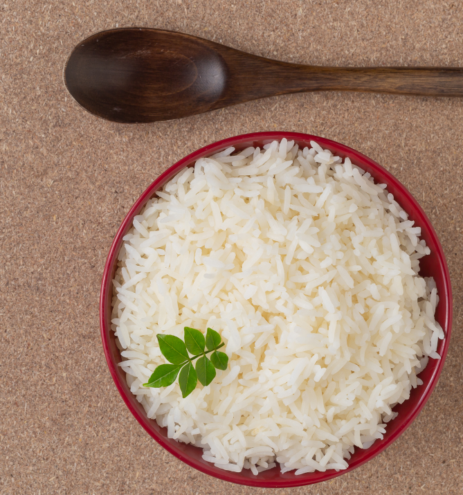

Oiled Rice
A very delicious rice coked with oil and other vital
ingredients, like vegetables to result in a balanced deit 
Ingredient provided for this Recipe
| Ingredient |
Amount(Quantity) |
- Raw Rice Grain
|
Three(3) cups full |
- Water
|
one(1) full Jug |
- Iodated Salt
|
Two(2) Table Spoons |
- Meet
|
Any amount of choice |
- vegetables
|
Half(1/2) of the vegetable will be good |
NOTE: The above listed recipes are absolute, but more
individual healthy recipes can be added
Steps in preparing Oiled Rice
- Place 1 cup rice into a bowl filled with with cold water if you decide to rinse it.
Swirl around the rice and slowly drain out the water.
Repeat until the water is mostly clear when drained. Drain the rice well in sieve.
- Heat 1 tbsp. olive oil in a skillet set over medium heat.
Add the rice grains and saute them until the ends of the rice are translucent
- Combine the rice with 1 1/2 cups water in a heavy saucepan and add salt to taste.
- Include 1 tsp. olive oil and set the pan over high heat. Heat the water until it comes to a boil.
- Remove the pan from the heat and set aside, covered, for another five minutes. This allows the rice to steam slightly.
- Fluff the rice grains with a fork before serving.